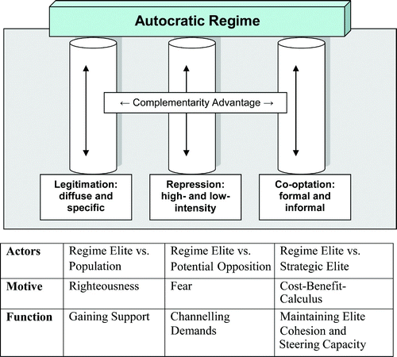
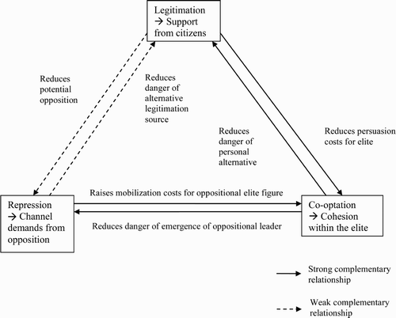

收录于合集

作品简介
【作者】 Johannes Gerschewski, 柏林自由大学与柏林社会科学研究中心全球治理研究员，其主要研究领域为比较政治、民主理论，政治秩序的合法性及意识形态等。
【编译】 胡瑞琨（国政学人编译员，爱丁堡大学硕士生）
【校对】 赵怡雯
【审核】 陈晓茹
【排版】 张越涵
【美编 】黄竹音
【来源】 Johannes Gerschewski (2013) The three pillars of stability: legitimation, repression, and co-optation in autocratic regimes, Democratization , 20:1, 13-38, DOI: 10.1080/13510347.2013.738860
期刊简介
图片来源：https://www.tandfonline.com/toc/fdem20/current
民主化（Democratization）是由泰勒与弗兰西斯集团（Taylor & Francis Group）出版的一份政治学学术期刊，主要关注领域为民主过渡、建立与巩固等民主化过程，其2018年影响因子为2.18。
稳定的三支柱：专断政体的合法化、压制与吸纳
The Three Pillars of Stability: Legitimation, Repression, and Co-optation in Autocratic Regimes
Johannes Gerschewski
文章导读
专断政权在什么情况下有可能稳定？其影响因素有哪些并如何发挥作用？基于这一问题，本文在综合对于专断政权的经典研究以及近期关于其稳定性讨论的论点，提出了一个理论框架，所有的专断政权的稳定性都可以参照三个支柱性因素来解释，即合法化、压制与吸纳。这三大支柱是如何建立的？在发挥稳定作用的过程中如何具有理论意义？作者认为，这一过程发生在各支柱因素的内部与各支柱之间，即可支配权力和物质资源提供外在动力；路径依赖提供内在动力；两者互相加固形成互补优势。作者认为，这一理论框架有两个优点： 既能解释政权类型的复杂性，又能保持理论的简约；通过静态模型来解释独裁政权稳定的原因，并通过动态的视角来理解各因素之间的作用过程。
01
概念分析
三大支柱为何对于专断政权的稳定至关重要？作者通过回顾对于专断体制研究的三个浪潮，总结出以下框架，并认为 这三大支柱可以预防三方面危险：普通民众的叛乱、有组织的叛乱团体的反动以及精英团体的内部分裂。 在这一部分，作者详细定义了这三大支柱的概念。
首先，关于合法化，有学者认为“合法专断”的概念本身是自相矛盾的，因此合法化对于专断政体的稳定并不重要。然而作者认为，基于韦伯式的合法性经验主义传统，合法化本身并不具有规范性含义，它旨在确保民众的主动同意、被动服从与遵守规则。作者在文章中通过政体的表现与产出划分合法性，即 明确支持（Specific Support） 与 模糊支持（Diffuse Support）。 前者为绩效导向，以判断该政体是否满足国家内部秩序的稳定，民众人身安全与社会经济发展需求的条件，后者为制度导向，即该政权实际代表与实质性质到底是什么。模糊支持的获得方式除了政治意识形态的统一以外，还可以通过宗教、民族主义以及领导人的个人魅力实现，例如二战时期希特勒在纳粹德国元首地位的确立。
其次，关于压制，作者认为， 压制的主要功能是按照其政治制度引导民众诉求，以使得这些诉求不会危害政权的稳定。 根据实施目标与所采取的形式，作者采用了高强度与低强度两种划分。
最后，关于吸纳，作者将其定义为，将 与自身战略相关的参与者与政权精英联系起来的能力。 这种吸纳是一种包容能力，可以充当传送带，以确保精英内部的凝聚力和政治精英的领导能力，并维持其下属竞争者之间的平衡而达到稳定的状态。在文中，作者通过下图展示了三个支柱的概念与作用。

图1：专断政体稳定的三大支柱
02
稳定化过程
支柱因素内部的巩固
作者认为， 为了实现长期的稳定，三个支柱需要随着时间逐渐制度化，并将其分为外部推动（exogenously reinforced institutionalization）与内部强化（self-reinforcing institutionalization）。
外部推动是制度化过程中最常见也是最直观的一种形式。力量和物质资源决定了制度化的进程。如果政治政权精英由于预算限制或权力资源减少而不再有能力促进合法化过程时，那么维持压制方式与吸纳其他政治精英的物质基础就会缺失，阻碍制度化的进程。内部强化的过程可以被理解成为路径依赖。作者分析，内部强化的过程会出现高额的固定物质成本、有效的学习与协调效应与网络效应的形成等现象。政治宣传与压制手段都可以被解释为一种网络化过程。
支柱之间的互补
作者认为，三个支柱之间不同的功能之间可以产生互补效应，进而形成一个有机的整体。作者在下图中解释了三者之间的互补关系。

图2: 支柱间的互补与强化
首先，吸纳是对压制功能的补充。 专断政权通过使用正式和非正式的手段吸纳其他精英人士，可以减少出现反对派的危险，而同时增加了反对派的动员成本。对于吸纳和合法化之间的关系也是如此。吸纳其他精英可以降低潜在的实现合法化政权的更替可能，同时合法化的表现可以降低了说服成本，使得吸纳过程更容易进行。
然而，合法化与压制之间存在着不确定性。 由于压制是一把双刃剑，政权可能会为了获得支持而减少压制行为，因此难以通过强制措施控制反动派的颠覆企图。或许不同强度的压制措施可以缓和这两大支柱之间的矛盾问题，但至少高强度手段可能与合法化过程难以兼容。如果这一互补性假设是正确的，未来需要对这一问题进行实证研究。作者认为，存在两种因果推断的路径，即寻找反事实的案例观察是否存在互补性，或者通过进行聚类分析或者定性比较研究来证明其因果关系。
03
结束语
尽管当前学术界在理解专断政体的内在逻辑方面仍存在盲点，但围绕相关问题的学术辩论仍在持续。本文将合法化、压制和吸纳作为影响专断政权稳定性的重要支柱性因素，从而提出“三个支柱”的理论框架，并详细讨论了支柱内部的外在推动与自我强化，以及支柱之间的相互作用。
译者评述
作者在本文中致力于寻找解释专断政权稳定性的主要因素，并考察其因素之间的互动作用。这不仅为专断政权研究引入了一个新的理论框架，同时也为这一理论的实证检验开启了一个新的起点，并有助于通过科学的范式认识这类政权的运作模式与稳定基础。由于合法化与压制因素之间的互动关系需要分类讨论，本文并没有提供详细的论证与检验过程。关于这一理论框架的来源以及随后的一系列研究中的回应与补充，译者在此推荐读者关注以克里斯托夫·斯特菲斯（Christoph Stefes）、沃尔夫冈·默克尔（Wolfgang Merkel）等学者为代表的柏林社会科学研究中心的专项研究为拓展，以跟进关注关于专断政权的相关研究。
文章观点不代表本平台观点，本平台评译分享的文章均出于专业学习之用, 不以任何盈利为目的，内容主要呈现对原文的介绍，原文内容请通过各高校购买的数据库自行下载
**
**
**
**
**
**
添加 “国小政”微信
获取最新资讯


国政学人
支持学术公益与知识传播
微信扫一扫赞赏作者 __赞赏
已喜欢，对作者说句悄悄话
取消 __
发送给作者
发送
最多40字，当前共字
上一页 1/3 下一页
长按二维码向我转账
支持学术公益与知识传播
受苹果公司新规定影响，微信 iOS 版的赞赏功能被关闭，可通过二维码转账支持公众号。